Notable works selected by critical thinkers of the Saïd Business School
To retrieve all the nominated works from the Bodleian Library's catalogue, see the ‘ct2012’ tag on SOLO
Printed copies of the catalogue are available from the Sainsbury Library
-
Welcome to Critical Thinking
The world of academia is profoundly defined by the intellectual interactions with ideas, stories, observations, theories and concepts its members routinely make, and there is perhaps no other field of intellectual activity in which are blurred to such a complete degree the distinctions between analyzer, thinker, commentator, critic, author, practitioner and educator.
I have been fortunate to work among the critical thinkers who emerge with this extraordinary capacity for wide, deep and varied engagement with the world of ideas, and who possess that level of engagement on which the vitality of a community of scholars and teachers so manifestly depends.
In asking our researchers and educators to share how and why the works they have nominated have impacted on them personally - whether as insightful, exciting, controversial, quirky, problematic or plain crazy - we have invited them to be reflective about themselves, and their reactions to ideas within the literature, and in so doing, share with us the values, insights and personal views that have gone some way to making them the critical thinkers they have become.
Chris Flegg - Business School Librarian
-
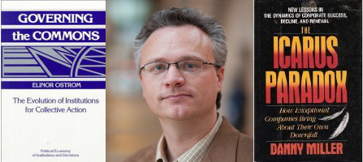
Mike Barnett
Governing the commons: The evolution of institutions for collective action - Elinor Ostrom
Ostrom, who recently won the Nobel Prize, studies ways in which individuals can self-organize to find resolutions to situations that, by economic logic, should lead to the tragedy of the commons. I’ve patterned my work on her ideas as I study this tension between self interest and societal interest within business firms, in hopes of finding ways that offer continued economic advancement without social & environmental degradation.
The Icarus paradox: How exceptional companies bring about their own downfall - Danny Miller
This book deals with the ever-intriguing question of why success breeds failure, and does so in a way that is thoroughly grounded in theory and accounts for the challenges of bounded rationality and organizational learning. Strategy is all about managing tensions, and this is the fundamental tension – near term efficiency vs long-term adaptability.
-
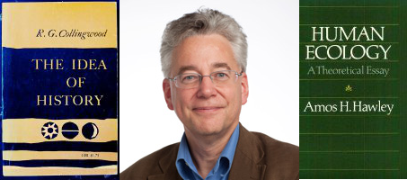
David Barron
The idea of history - R.G. Collingwood
I came across this book when I was an undergraduate. It was a set reading in a course on the philosophy of science. There were a number of things that made a big impression on me about this book. The first was that, in stark contrast to many of the philosophical books that I was reading at that time, this was a model of clear, concise, beautifully crafted English. Indeed, I recall one member of the faculty saying that he often recommended Collingwood’s autobiography (which is another excellent book, by the way) as a model for anyone struggling with their writing. More importantly, though, this was my first exposure to hermeneutic philosophy. It was a revelation to me. Until then, if I’d had to express my ideas about the nature of knowledge, I would no doubt have come up with a sort of naive positivism. This book opened my eyes to the possibility of alternative ways of thinking about knowledge. As it happens, I don’t use hermeneutic methods, but the most important thing is that my thinking about these matters is a bit less naive than it otherwise would have been.
Human ecology - Amos Hawley
Hawley is undoubtedly one of the most influential sociologists of the twentieth century. His work was both a direct and indirect influence on me – indirect because my PhD supervisor was a student of Hawley’s. The central premise of his work is that collective, social life is an adaptive process consisting of an interaction with environment, population and organization. Out of that process emerges an “ecosystem”. A key implication of this is that social life is more than the sum of its parts. Hawley wrote, “Just as the individual is qualitatively different from the aggregate of cells composing the body, so is the social system qualitatively different from the collection of individuals in which it is observed. It follows, therefore, that the assumptions governing explanations of individual behaviour are not transferable to explanations of systemic events.” This is a lesson all too often forgotten.
-
Kathryn Bishop
An intimate history of humanity - Theodore Zeldin
Imagine you are a person who can only see in 2D: you see outline, colour and movement so there is much to dazzle the eye. Suddenly, by some miracle, you perceive the third dimension – hinterland – what lies underneath and behind – depth. Imagine your astonishment and the urgent need to look again at everything you have already seen. An intimate history of humanity performed that miracle for me, changed the way I see. I thought I understood history – narrative flow, facts, events – but this intimate history of humanity introduced a dimension I had not perceived. I thought I understood the academic boundaries of a subject like “history” but this book connected disciplines, moved from story into psychology, from anecdote to insight, from economics to sociology and to philosophy in a way I had not previously encountered. The chapter headings draw the reader in – “How some people have acquired an immunity to loneliness” or “Why there has been more progress in cooking than in sex.” And of course, amongst the chapters, I found myself: I found the categorisation of a characteristic which I possessed and which had confused me, and the insight was hugely liberating.
Amazon Kindle 0.99p Daily Deal
I resisted the shiny lure of the e’book for more than 5 years, but the capitulation has brought unexpected insight. I have read more literary tosh on my Kindle in the last year than ever before, and have had to rework my attitude toward text as a consequence. My academic background is in English literature, but I have always had a taste for the minor works of literature, so I have read both “good” and “not-sogood” books. But the Amazon 99p Daily Deal has encouraged me to experiment with genres and authors never before encountered and ripped open my understanding of what it means to write well. The fact is that some of these books appear to be “broken”: the text doesn’t fly off the page and into my mind by itself, but I have to push my eyes along each word, the pictures in my mind are not in colour and the characters don’t move. It isn’t the fault of the format or the e’book reader. Even where the subject matter looks interesting, the scaffolding of the book is clumsy and visible, the time frame jumps oddly within a single paragraph, or characters speak exclusively in cliche. But I keep reading this stuff, at 99p per book, because I might find the undiscovered treasure.
-
Richard Briant
War and peace - Leo Tolstoy
I read War and peace in my mid 20s, when I was immobilised after falling off my bike on an icy Oxford road. It transported me into a series of wonderfully evocative Russian worlds: from grand salons, great wealth, huge estates and social intrigues, to rural life, riding, hunting and enjoying the balalaika. Most of all, it interweaves the grand sweep of Napoleon’s Grande Armée’s calamitous campaign of 1812 with deeply entrancing human stories, of sadness, complexity, love and much more. On school library shelves, editions of War and peace looked massive and uninviting. The title was forbidding: perhaps one of those overlong “introductions” to economics or, in this case, international relations. How wrong! Instead it was a thorough, engaging and never-ceasing pleasure, a great introduction to Russia, still alive in my imagination, and a reminder that starting on anything new can be daunting but is often hugely rewarding.
The making of the middle ages - R W Southern
This short book was an eye-opener for me when I first read it. It is written by one of the wisest and, as I later discovered, the most humble of historians and teachers. For me, it’s history writing at its best. It combines academic analysis, narrative and specific evidence to bring this period to life, and uses insights into the thinking, motivation and actions of individuals to paint a big picture. I was fascinated by the medieval way of seeing the world, and the book prompted an interest in the relationship, often convoluted, between the history of thought and of social/political events and structures. It illustrates how obscure events may often prove the most significant. The eleventh and twelfth centuries were the start, as the author says, of a period of “a thousand years when Europe was the chief centre of political experiment, economic expansion and intellectual discovery of the world”. Even more importantly, it was the pre-renaissance Renaissance, when Aristotle and classical scholars were rediscovered, and Bernard of Chartres realised that we were dwarfs standing on the shoulders of giants. Dwarfs indeed, but we could possibly see a tiny bit further. Richard Briant I read it at school. It kindled for me a strong interest in history. What I now appreciate is that by throwing a light on past thinking it prompts a questioning perspective on our own. I also appreciate the simplicity and elegance of its writing. It is quite simply a lovely book.
-
Alexander Budzier
Making social science matter - Bent Flyvbjerg
As a long-trained believer in survey instruments and success-factor research, this book was the first to open my mind about the ‘scientific fallacy’ of the social sciences. This and the following chapters combined with ease the thoughts of Dreyfus & Dreyfus (why rules have limits), Nietzsche (why real history is notin books), Bourdieu (practices and fieldwork philosophy), Habermas (rationality through communication), Foucault (power and micro-politics), and above all Aristotle (the virtues of techne, episteme, and phronesis). The first read of this book was way over my head. After reading around it I came back to the book, and the clarity, structure, and argument profoundly changed my thinking.
Cultural theory of risk (Chapter 3 in Robert Heath’s Handbook of risk and crisis communication) - James Tansey and Steve Rayner
I first disagreed vehemently with the ideas that are raised in the Cultural theory of risk. I never understood why individual human agency is glossed over so lightly in most sociological texts. Then I read this text: a short summary of a very wide field. Once I came to this chapter, which explained the processes of how and why we, as a society, build clumsy solutions to wicked problems, how individuals and groups interact, and how this shapes most discourse in democracy, it not only made me think differently about our society, but it also made me truly appreciate contemporary nonquantitative sociology.
-
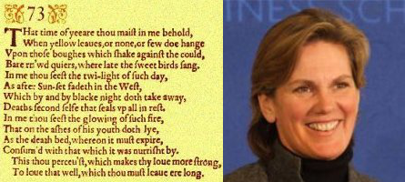
Tracey Camilleri
Sonnet 73 - William Shakespeare
There are several sonnets I could have chosen but this is one of the most powerful sonnets I know. As I get older, I am increasingly drawn to the form of the sonnet – its economy, its paradoxes of freedom within tight constraint – its ‘infinite riches in a little room’. I am drawn too – and influenced in my design of containers for learning in executive education – by the sonnet’s soaring efficiency – the play of rhythm, the layering of rhyme, the dynamics of meaning moving through discovery, synthesis, and coming into land with the couplet at the end. I like how the words are made to work within the form on so many planes. Yet the whole is surrounded by space on the page – the sonnet is a tight provocation and the reader’s response is invited into that space. Just as I get older and more experienced I want to design tauter and tauter programmes, with the rhythms, layers and dynamics of a sonnet but with more and more space left blank around them for the exploration of shared meaning (if that doesn’t sound too pretentious). On a final personal note, line four of this sonnet – the famous ‘Bare ruin’d choirs, where late the sweet birds sang’ connects with the days and hours I have spent in Magdalen College chapel listening to my son, a chorister, singing – and the knowledge that voice’s break. When time is short, poetry is the way forward!
-
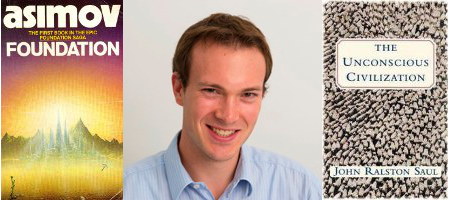
Brian Coulter
Foundation - Isaac Asimov
The Foundation series by Isaac Asimov tells the story of a mathematician who applies his research to predict the path of humanity, to a very rough degree, out into the distant future. I read it nearly fifteen years ago, while I was still in elementary school. At the time, I was studying the common stages through which almost all revolutions pass: the idea of expanding common traits in the history into a rough prediction for the future intrigued me, even at a young age. While I chose to study engineering as an undergraduate, I always had the idea of applying scientific methods to the study of groups of people in the back of my mind, and I think it contributed in some small way to my current role as a DPhil Economist.
The unconscious civilization - John Ralston Saul
John Ralston Saul has been a favourite author of mine for a long time, and choosing between the most influential works of his is difficult. An economist by training, Saul takes a very different approach to problems to most other academics. His work is refreshing in many ways. The general thrust of The unconscious civilization is that reason has begun to crowd out all other decision-making faculties in people, and society at large. He urges people to focus more on what is ‘right’, ‘good’, or ‘beautiful’, rather than what is rational, in life. The thesis of the book is well-captured by one particular line, which I often keep in mind, and would do well to keep in mind more often in my own research: “Sensibly integrated along with our other qualities, reason is invaluable. Put out on its own as a flagship for society and for all of our actions, it quickly becomes irrational.”
-
Michael Devereux
Grapes of wrath - John Steinbeck
This is an incredible novel: all human life is there. For me, a key aspect of the story is the powerful role that unregulated free markets have in shaping and ruining lives. The Joad family travel to California expecting a better life, but don’t find it. In economic terms, there is a deliberatelycreated over-supply of labour, a lack of labour market regulations to protect the potential workforce, and consequently, tremendous exploitation of workers and their families. Thinking about these issues was an important factor in my deciding to study and practise economics.
The British tax system - John Kay and Mervyn King
If the government is responsible for spending around 40% of total national income, then how should it raise the money in a fair and efficient way? This book was my introduction to that question, brilliantly written by my ex-tutor, John Kay – then my boss at the Institute for Fiscal Studies (and subsequently SBS Dean) – together with Mervyn King, who also went on to great things. The book applies basic economic principles to the key questions in taxation – including how (and whether) to tax business. But it also highlights practical issues: this is a book for policy makers as well as academics.
-
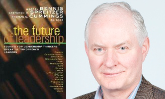
Ron Emerson
Leadership as the legitimation of doubt (in The future of leadership) - Karl Weick
Though attempting to update the approach to teaching leadership, much of this still leans heavily on outdated 20th century models. This is reinforced by a focus that is more on the nature of leadership challenges, rather than an enquiry into the “how” of leadership. Weick’s article takes a brave position by suggesting a counterintuitive interpretation of what leadership is, and will be about, in the future – the power of doubt, and where that position can take us. It is counterintuitive because there is still that strong atavistic tendency in everyone to look for answers from leaders, especially in crisis situations which seem to pervade all aspects of modern life. This represents a clear and unequivocal move away from the scientific and predictive world of business management and models of the late 20th century to one where, in an unknowable world, people have to work with a changing landscape. It is not, however, a simplistic insight that in a complex world no one person can have total knowledge and therefore needs to use the collective wisdom to solve problems, though this may be true: it is more about, as he says, an understanding of the nature of this new world where “there will be fewer experts and more novices, more improvisation and fewer routines, more humility and less hubris, etc”. Weick stresses the “value” of uncertainty, itself a counterintuitive position in the pressured organisation which may see this as a weakness. In dropping the traditional tools of management, he invokes a sense of “lightness and agility” that then gives the opportunity to gain new perspectives and reframing of the situation. Ultimately, the ability for a leader to say “I don’t know” is an opportunity not only for the leader to learn new things, but also grants permission for followers to do the same thing. In a constantly changing world this would seem
-
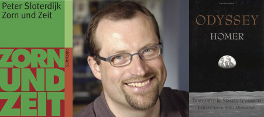
Peter Hanke
Zorn und Zeit (Rage and time) - Peter Sloterdijk
My inspiration relates to the concept of Thymos. Sloterdijk is one of the most irritating and dystopian writers of our time. Reading him is best done in small portions and only with a good dose of positive ideas at the ready. Elegantly argued but with cynical disbelief in the human race, Sloterdijk attacks the current assumptions of political mainstream views like few other contemporary philosophers. Some of his remarkable observations and interpretations of critical issues in the world of today evolve from what he perceives as the tensions between cultures – especially the clash between Western civilization’s concept of consumption and the Islamic pride and anger, between which Sloterdijk sees no possible reconciliation. Sloterdijk is not the first author to point out that these tensions exist here and on other levels internally in all societies – and cannot be ignored. The real inspirational aspect I find is in his emphasis on the notion of “Thymos”, as opposed to “Eros” from the Platonic philosophy – allowing a degree and form of integration between desire and pride, pragmatic consumption and dedicated creation. For a performing artist, the endless hours of rehearsal, tensions with aesthetic choices and dilemmas, years of struggle to mature technique and strive for originality, reflect the concept of Thymos pretty well, even as you relate to the business of creating enjoyable entertainment and strive to give your audience a satisfying and meaningful experience. Turning Sloterdijk’s darkness and desperate opinions into leadership virtues in music, recognizing talent and developing a truthful artistic expression is an act of true Thymos in itself.
The Odyssey - Homer
An important inspirational aspect for me is the basic understanding of the notion of Mentor. This epic tale is something you rarely read from the beginning to the end, and as it probably is a collective transcription of myths by more than one story-teller rather than a single author’s work, you can’t read it without pursuing different interpretations parallel to the reading experience. This is the way our educational systems have approached this work over the last two centuries, and to some extend it is a pity that the text is not allowed to shine through on its own terms. Odysseus and his peers in the story are characters we have heard about, that we use as role models, and serve us as mythological beings, but whom we rarely meet “literally”. However, reading it as a novel without judging the piece too much for its inconsistency and stylistic variations can be pretty inspiring and worth doing at least once in your lifetime. Doing that in a brilliant new Danish translation from the Greek origin gave me a completely new insight into the notion of Mentor. Very familiar with the common definition of the mentor-role as a relationship between a senior experienced person and a junior and aspiring apprentice, this complete reading of the Odyssey opened up a new understanding of the spirit of Mentor, his self-image and the needed divine participation in his actions as a counselor and sidekick for Telemachos. Going back to the origin you find that Mentor is a goddess-inspired fighter who favours the other’s quest rather than his own, not completely aware during the battle for the common good, and consciously stepping down when the job is done. In this original version of the Mentor-character, he carries out his deed in an enchanted state of mind – a really interesting concept of consultancy, leadership or talent development.
-
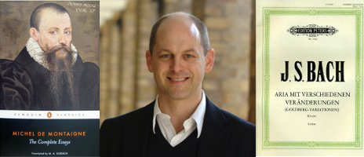
Pegram Harrison
Collected essays - Michel de Montaigne
In writing about himself, Montaigne manages to reflect on the whole world. He has a very direct style that doesn’t interfere with his insights, and that also enhances the clarity of his observations. He does not shy away from tricky topics: cannibalism, the weaknesses of kings, desperate poverty, betrayal in friendship. But his ability to learn from whatever he beholds and to gather information from the whole human condition, is enormously admirable. Also, he was a consumate manager in many ways – chatelain of a large and relatively successful estate in a ruinous economy, able adviser to unstable governments, and leader of complex diplomatic missions. But he knew the limits of his influence, and how to accommodate the irrationalities and self-interest of people into the exercise of power. He somehow managed through his selfcritical reasoning to have a far more considerable and lasting impact on the world than anyone he ever worked for. Critical thinking, insofar as it is about getting beneath surfaces and resisting the distractions of rhetoric and the laziness of bias, operates in full force in every sentence of Montaigne’s work and most acts of his life.
Goldberg variations - J S Bach
This may seem a bit odd, but the notion of a piece of musical argument and exposition as an example of critical thinking isn’t as inaccessible as it might appear at first. From very basic building blocks, Bach builds up something at once complex and comprehensible, a statement both elegant and persuasive. The piece consists of a very simple tune followed by variations on aspects of that tune. He tries things out and rejects some, and then advances more coherent ideas toward an emerging resolution. The variations move elaborately beyond what most other people might ever be able to conceive, and yet are “obvious” when you hear them, as if the reasoning behind the original ideas could not lead anywhere else. This seems to be the core of critical thinking: to elaborate for the purpose of clarifying, to argue for the purpose of persuading. Bach’s music displays critical thinking in this pure form, and is an example for how to write and think through any medium. Also, music is about performance, or even implementation – to use a word we’re more accustomed to in a business school. Even Bach, for all his unparalleled genius, needs a performer (and often a team of performers) to communicate his ideas and make them happen. This adds an extra layer of critical insight and interpretation into the mix, as well as the challenges of co-ordination and the benefits of complementarity. Critical thinking helps us to conceive, certainly, but it also helps us to act and to collaborate.
-
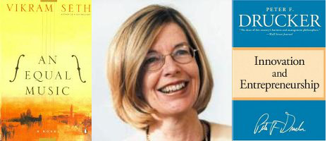
Gay Haskins
An equal music - Vikram Seth
An equal music is a tender and exquisitely written story of love between two musicians, love lost, rekindled, and finally lost once more. And at the same time, it is a story of music and the beauty that it brings to our lives. In his author’s note, Vikram Seth wrote, “Music to me is dearer even than speech”: An equal music is imbued with both his reverence for and deep knowledge of classical music. You can almost hear the music as you read. Critics have described it as “the finest novel about music ever written in the English language”. It is one of the most moving books that I have ever read.
Innovation and entrepreneurship - Peter Drucker
I have to choose a book by Peter Drucker because I believe he was one of the greatest management thinkers ever. I first met him in California when I was working at The Economist in 1988 and his breadth of thinking astounded me – as did his old world simplicity, illustrated for example, by the ancient typewriter that he used to send crookedly written messages. Subsequently, I had the good fortune to work with him, and devour his wisdom on several occasions when we brought him to England for conferences and seminars. I have chosen Innovation and entrepreneurship because of its emphasis on the critical importance of innovation and entrepreneurship in society and organisations.
-
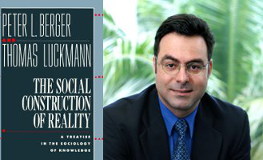
Loizos Heracleous
The social construction of reality: A treatise in the sociology of knowledge - Peter Berger and Thomas Luckmann
This was a formative book for me. By the time I was undertaking my PhD, I was fortunate enough to be familiar with it, and it has since guided and inspired me in my explorations of organizational discourse as well as other interpretive research. I was happy recently to find an original edition of this text in a second-hand bookshop, and it has pride of place on my bookshelf. Following in the footsteps of the phenomenologists, Berger and Luckmann produced a foundational sociological text which argued that reality is socially constructed, and suggested that students of societies and organizations, rather than taking institutions and meaning systems for granted, should attend to the processes through which meaning is constituted and institutionalization occurs, with special attention to sign systems such as language.
-
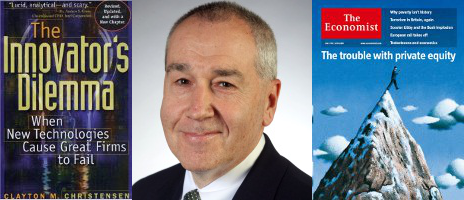
John Hoffmire
The innovator's dilemma - Clayton Christensen
The reason I would point to this piece is that Clayton has returned minds across the world to the processes of innovation and measuring the impact of our time here on earth. There is more concentration, as a result of Professor Christensen’s work, on the nature of turmoil in product markets and a greater understanding of how services and goods need to solve a real problem for clients and customers. He has also brought a much finer appreciation to people such as myself for the concept of how, in some cases, products just have to be just good enough. When they are good enough, and considerably less expensive than competing options, they become highly competitive forces.
The Economist
The Economist has played a significant role in my life for decades. I no longer read it cover to cover each week, but I did for many years. It has taught me to have a more coherent world view about privatization, the role of corporations, the limits of government intervention, and the law of unintended consequences. At a very basic level, as well, it has helped me become a better thinker and a somewhat better writer. Especially given the historic connection of the Economist to Oxford, I believe that this periodical should have its place among the influencers of critical thinking at SBS.
-
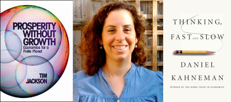
Adi Kremnizer
Prosperity without growth: Economics for a finite planet - Tim Jackson
This is the first book to allow my two co-existing, usually contradicting identities to live in peace. Five years of training made me an economist: growing up and waking up to the latest alarming evidence of global warming made me an ecologist. I needed some theory to back up what I felt was right, and it came in his words “The idea of a non-growing economy may be an anathema to an economist, but the idea of a continually growing economy is an anathema to an ecologist.”
Thinking, fast and slow - Daniel Kahneman
I have to admit I am a long time admirer of his work with Amos Trersky. I discovered it in my first year of undergrad, when I was lucky enough to hear him in a seminar. My view of economics and rationality changed on the spot, and I spent most of my time studying economics in considering the links between ‘bounded rationality’ and economic theory. This last book is a treat! It talks about two systems within us. System One operates automatically and quickly, with little or no sense of effort or control. System Two allocates attention to the effortful mental activities that demand it. System Two is associated with the subjective experience of agency, choice and concentration. If we learn to identify when we use each of the systems, we can avoid reasoning mistakes. The end of each chapter has some very useful “quotes” which illustrate the main points of the chapter. The book is also full of little ‘mental exercises’ to illustrate how limited our mental and computational power really is (as if I needed any reminders!). This is a fun read above all, and eye-opener to the neo-classic man out there!
-
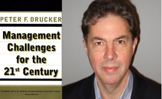
Peter Lednor
Management challenges for the 21st century - Peter Drucker
This short book is of considerable breadth and depth, contains much which is stimulating, provocative and entertaining, and merits re-reading in the light of experience. The title, while accurate, does not do full justice to the contents. It is often assumed that ‘management’ refers to business management, while in fact, as the author points out, ‘management is the specific and distinguishing organ of any and all organisations’. Given that most of us will work for some form of organization, be it public, private or NGO, this book is widely relevant. Regarding scope, the final sentences of the book state ‘But the changes discussed in this book go way beyond management. They go way beyond the individual and his or her career. What this book actually dealt with is: the future of society’. A big topic thus, relevant to many, but one which is covered in no more than two hundred pages, all eminently readable, and six chapters: Management’s new paradigms; Strategy – the new certainties; The change leader; Information challenges; Knowledge worker productivity; Managing oneself. Peter Drucker (1909-2005) had a long and productive life as a writer, teacher and consultant. He frequently drew on his own experiences, once commenting, at the height of the dotcom era, “I used to believe in the new economy – that was in 1929”. Few of us will be able to cite – with relevance – a professional lesson learnt 70 years earlier. He also made use of an impressive range of historical examples covering many centuries and countries. He was often witty. He disliked being called a guru, saying that the only reason the word ‘guru’ is used is that ‘charlatan’ is too long for newspaper headlines. The present book was written when he was close to 90 and supplements his earlier work by taking a forward-looking view. So apart from the rather rare pleasure of reading management literature which is broad, deep, concise, clear, insightful, humorous and challenging, how did this impact me? I bought this book in about 2002 when I was then working in a major industrial technical center, and moving from a technical project manager role to a much broader one managing and stimulating innovation. I found the whole book thought-provoking, but the final two chapters in particular – on knowledge worker productivity, and managing oneself – resonated with me at the time. Overall the book has helped me in three ways. Firstly, in understanding the waves of change (including many reorganizations and lay-offs), that impacted my work environment throughout the 1990s; secondly, in thinking about the future, at a personal, organizational and societal level; and thirdly, in contributing to discussions I have had with young people at the start of their careers. Reflecting on the above, and re-reading some of the book now, I feel that the book still has much to offer, especially – and this is hardly a niche market! – for anyone working in an organization and with an interest in the future of society.
-
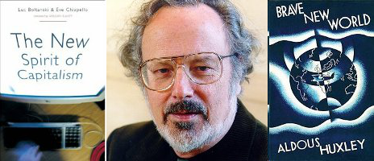
Ray Loveridge
The new spirit of capitalism - L Boltanski, E Chiapello, and G Elliott
This impresses me as an interesting example of critical reflexivity in reviewing the role of (French) management textual discourse in normalizing and justifying directions of societal change.
Brave new world - Aldous Huxley
I read this at around age 18. It is an account of AD 2540 (632 After Ford) in which consumerism dominates all aspects of life including sex and death. It is written in the mode of Swift’s Gulliver’s travels (1726) and Voltaire’s Candide ou l’Optimisme (1759), that is, it records the impressions of a Noble Savage as a naive anti-hero. He has been taken out of the reservation in which quaint primitives are allowed to maintain a natural life style. The latter are retained to convince consumers that they exercise free will; in fact in BNW they are literally bottled into their social class at birth. Eighty years on, I still find Huxley’s allegoric work returns to me when reading overly deterministic prescriptions of how society should be ‘managed’. His vivid descriptions of the ‘sound & light shows’ put on as entertainment for Delta groups also return when I am guiltily watching X-Factor. More seriously, for me its message resonates with the 1960s critique of consumerism in One dimensional man (Marcuse 1964), a strand that ran into the ground with the onset of Foucaultian fatalism: I remain with the hope that we can retain enough reserves of critical reflexivity when analysing the nature of management within the corporate environment to which we have all contributed.
-
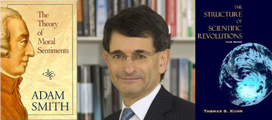
Colin Mayer
The theory of moral sentiments - Adam Smith
This is one of the most significant works of moral philosophy which reads with a relevance today that belies the fact it first appeared more than 250 years ago. It has had a profound influence on my views on morality and economics. It is a very humane work, which has avoided the dogma that has come to be associated with the Wealth of nations.
The structure of scientific revolutions - Thomas Kuhn
This work transformed my view on scientific process and the way in which human knowledge is accumulated when I first read it 30 years ago. It is of immense relevance to the social sciences today when economics in particular faces precisely the type of failure of explanatory power which necessitates the paradigm shift that lies at the heart of Kuhn’s work.
-
Christopher McKenna
The system of professions: Essay on the division of expert labour - Andrew Abbott
A brilliant (if difficult) analysis of the competition among the professions. It describes the Darwinian struggle among different professionals and professions in context, and asks why some win and others lose over time (and how they may decline again). This book forced me to think about how professional service firms have achieved their positions of leadership and how I might say something beyond what Abbott had already theorised. It is the sort of book that one turns back to again and again. For nearly 25 years, Abbot has dominated the field of the professions for good reason – this is an extraordinarily rich book.
Two concepts of liberty - Isaiah Berlin
Two concepts of liberty was Isaiah Berlin’s 1958 inaugural lecture as Chichele Professor of Social and Political Theory at Oxford. Now more than 50 years old, it is the sort of essay that fundamentally redefines something that you thought you already understood. Every time that I fasten a seatbelt, I think of Berlin’s distinction between freedom from and freedom to, and how often people fail to separate the two meanings. It is also a wonderful document for teaching – I can hear in it why Berlin was so influential and how one crafts a lecture to affect the audience in a fundamental way.
-
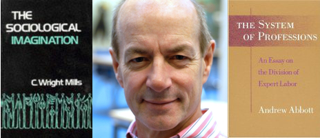
Tim Morris
The sociological imagination - C Wright Mills
Two things about this book appealed to me. One is the sheer sweep of the ideas which Wright Mills deploys to explain broad changes at work and which is all too rare these days. Second, his discussion of the importance of research which is sensitive to context and subject as well as theoretically robust inspired me and my peers many years ago as doctoral students, and I still go back to it for the wisdom Wright Mills imparts.
The system of professions: Essay on the division of expert labour - Andrew Abbot
A book which changed the way I, and many others, thought about professions by developing the idea of a set of competing jurisdictions in which they work, and therefore suggesting we see professions as part of ecology of occupations with expertise. The setup chapters are superb for laying out the ideas clearly and forcefully, and some of the sections, such as those dealing with strategies for jurisdictional protection or advance, are models of intellectual brilliance. Abbott deploys an argument based on historical sociology, combining historical method and detail with the broader sweep and concepts of the sociology of the professions. The core concept of jurisdiction, linking to expertise and the ecological idea of competition for attractive jurisdictional spaces, remains very powerful.
-
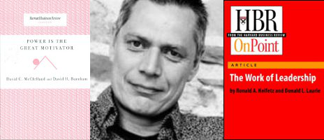
Steve Mostyn
Power is the great motivator - David McClelland and David Burnham
Power is the great motivator, the HBR classic by David McClelland and David Burnham was first published in 1976 and cuts to the chase around the complex topic of power and leadership, and how it links to motives and motivation. The authors found that managers fall into three motivational groups. Those in the first – affiliative managers – need to be liked more than they need to get things done. Their decisions are aimed at increasing their own popularity rather than promoting the goals of the organization. Managers motivated by the need to achieve—the second group—aren’t worried about what people think of them. They focus on setting goals and reaching them, but they put their own achievement and recognition first. Those in the third group —institutional managers—are interested above all in power. Recognizing that people only get things done inside organizations if they can influence the people around them, they focus on building power through influence rather than through their own individual achievement. People in this third group are the most effective, and their direct reports have a greater sense of responsibility, see organizational goals more clearly, and exhibit more team spirit. The article has influenced me personally as it backs up my intuitive insights into leaders and groups and how they often use and abuse power.
The work of leadership - Ronald Heifetz and Donald Laurie
The work of leadership is a foundation article to my personal practice. The authors, Ronald Heifetz and Donald Laurie, introduced the breakthrough concept of adaptive change—the sort of change that occurs when people and organizations are forced to adjust to a radically altered environment. They challenge the traditional understanding of the leader-follower relationship. The helpful distinction between adaptive change and technical change is, and remains, a key insight. The work on adaptive leadership is further enhanced by Prof Richard Pascale at SBS. Ron Heifetz told me that 'Pascale is a better teacher of the concept' than Heifetz is himself. This work is not only helpful as a piece of critical thinking, but its practical implication to 'wicked problems' is evident to executive teams across the globe.
-
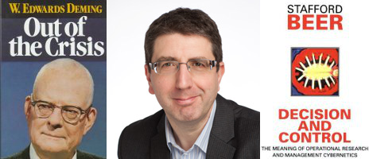
Steve New
Out of the crisis - W E Deming
Deming’s book is an incoherent ramble: a disconnected jumble of anecdotes, newspaper clippings, airy injunctions and folksy wisdom. It is full of absurd diagrams: Figure Three (“Man running upstairs”) is a gem. It is full of dated and biased examples. It is also repetitive, in places naïve, and occasionally simply wrong. But for all that, it is unequivocally one of the most interesting and profound books on management. You certainly get the sense of the curmudgeonly genius behind the creaky prose. In terms of the development of management practice, Deming probably has had more influence than the combined corpus of “proper” management academia, yet his ideas remain as awkward and radical as they were thirty years ago. It is a book with clear messages: business should be based on respect for customers, workers and data. It sits squarely in the tradition of US management thought, yet retains its jarring perpendicular quality: it is sad that the many casual citations of this work often invoke it as support for shallow and faddish ideas which the book explicitly rejects.
Decision and control - S Beer
Stafford Beer’s first major work captures the essence of the man: erudite, pretentious, funny and astonishingly prescient. The book is about the application of ‘cybernetics’ – the ‘new science of control’ – to the management of corporations. Much of what has come later – balanced scorecards, enterprise resource planning, ‘the race against the machines’ – all sits here, surrounded by quotations from Locke and a large number of childish jokes (see the index entry for Bloggs, Dr Fred). Reading Beer nearly fifty years on is a bit like reading Drucker: some of the ideas now seem common-sense, but then you realize with a start that they were entirely novel when originally written; they have become part of the unconscious apparatus of everyday thought. The book was written several years before Beer’s Chilean adventures, when he worked to support the Allende regime by the heroically optimistic application of 1970s computer technology to the running of an economy. But it clearly reflects Beer’s conviction that technology should be applied for the good of the people, and that science, democracy and justice need an active reconciliation.
-
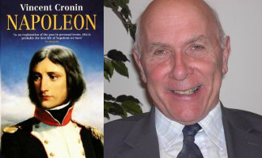
Alistair Nicholson
Napoleon - Vincent Cronin
Napoleon had four fundamental characteristics:
1. Stamina. He could normally stay working and functioning effectively for 18 hours a day, and he regarded the characteristic of stamina as a major factor in his ability to keep his troops going and keep his enemy perplexed.
The points made to me are that Napoleon, more than anyone in history, grasped the reality of implementing a policy, choosing a strategy, and being able to make very complicated situations work in his favour. Not only was his skill applied to the military area, but he also engaged his strategy in multiple directions within a community – developing education, the law, the organisation of international relations, etc. The fundamental insight was that Napoleon always had a solid foundation for his actions, based on experience, what he had read, and what he had thought out analytically.
2. Speed. Napoleon regarded speed as a characteristic necessary to give the impression of larger numbers of forces than he actually had, and to be able to make tactical movements so rapid that the enemy became confused.
3. An understanding of topography, or the nature of his surroundings/environment. Another of Napoleon’s strengths was that he had an ability to judge an environment he couldn’t always actually see. It originated from his boyhood time in Corsica, where to avoid bandits he used to read the topography of the hills around him to find effective escape routes.
4. The application of a talent or skill, by the possessor of that skill. In Napoleon’s case his skill was in artillery. Even when using infantry in battle, Napoleon thought through the interactions between infantry elements, and the deployment of them, in terms of their role as artillery, that he understood so well. -
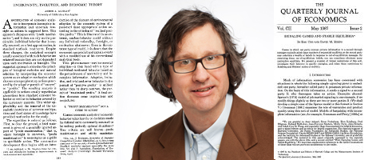
Thomas Noe
Uncertainty, evolution, and economic theory - Armen Alchian in JPE 58, 1950
I read this article by chance. It was part of a very tattered (and thus inexpensive) used book containing readings on economic theory. At the time, I was not very interested in economics but the price was right. The article provided a different perspective on economics than the mechanistic supply/demand--IS/LM curve economics I had been exposed to in school. It highlighted the role of luck and the importance of imperfect information for understanding the behaviour of the economy. The paper to some extent motivated my decision to pursue a doctorate in financial economics.
Signaling games and stable equilibria - I. Cho & D. Kreps
I read this when I was working on my dissertation. The problem addressed in the article is how to rationally revise one’s beliefs, in response to actions that never occur. This seems like a rather scholastic problem at first glance, but actually in a world with more than one agent, it is an important and vexing issue, and one that was very relevant for my dissertation work. The reason that an action never occurs might be the conjectured response to the action, which is based on the agents’ beliefs about what the action implies, making the agents unwilling to take the action. For example, if I believed that Chris Flegg’s only motive for trying to enter my SBS office was to kill me, I would bar the door to keep her out should she knock. Chris, knowing this, would never knock and, thus, the action of Chris knocking on my door would never occur. Hence, my belief about Chris’ homicidal tendencies would never be disconfirmed by experience. This paper attempts to derive rules of reasoning about actions which rule out these sorts of beliefs.
-
Robert Poynton
The turning point - Fritjof Capra
Capra, a physicist by training was the person who opened my eyes to the links between Western science and Eastern mysticism and thus made visible to me the fact that I was immersed in a way of thinking, like all of us in the West, which is a way of thinking, not a truth. This ‘awakening’, was nothing more, if you like, an intellectual confirmation of something I already knew emotionally and intuitively, but that was for me, exactly its power: further, because Capra hailed from the high intellectual status territory of particle physics, he provided the intellectual understanding to be able to not only challenge reductionist thinking in particular, but also the whole mechanical, Newtonian paradigm in general, in a way that was neither alternative nor lacking in rigour. For me personally it became even more potent when I later got to know Capra and realised that his work, indeed, this very same book, had sparked off a chain of thinking that led Margaret Wheatley to write Leadership for the New Science.
Out of control - Kevin Kelly
I find it extraordinary, even now, to think that Kelly wrote this in 1994. In my view it far surpasses his much later work What technology wants. In Out of control, he unifies and explains the realm of ‘zillionics’— i.e. the complexities of real life and biology - and points out with brilliant examples and syntheses the shortcomings of a control-based way of thinking and acting. Given that I work with improv. theatre (in organisations, including the Saïd Business School), what I find here is a wealth of examples, stories and substance to illustrate the limitations of our current thinking. He paints pictures of living buildings, talks about robot wars, Borgian libraries of infinite form, and beekeeping. Just breathtaking.
-
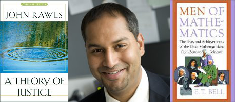
Tarun Ramadorai
A theory of justice - John Rawls
I first encountered this book as a student of politics and philosophy at Cambridge University in 1997. It is clearly written, tackles fundamental issues about how we should think about questions of distribution in society, is cogently argued, and above all, presents a kindly, benevolent perspective on these questions. While it is by no means the final word on questions on how best to design political (and as a corollary, economic) systems, it certainly offers an excellent place to start. Coming from India, a country in which great wealth co-exists alongside great deprivation, it’s a work of philosophy that tackles what I believe are questions of profound, first-order importance.
Men of mathematics - E T Bell
During my late teens, having been through a long series of poor mathematics teachers, I encountered a great-uncle who was both passionate about, and gifted at, mathematics (he is a cosmic-ray physicist). It was just possible that mathematics might be cool — and he suggested this book to me as a pleasant diversion from then-hard trigonometry and calculus problems. The book, while great at explaining important mathematical ideas through the ages (ending in the 1920s), also presents a quirky account of the personalities behind the ideas, including the doomed Galois who died in a duel at the age of 20, having cracked important and deep problems of abstract algebra! An irresistible combination of deep conceptual ideas and weird and wonderful personalities.
-
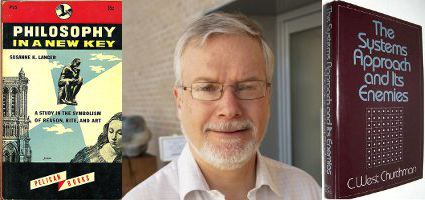
Rafael Ramirez
Philosophy in a new key - Sussane K Langer
This book proved to be ‘the’ key for my dissertation, differentiating between language-based symbol systems (and alternative ones like music) in how we represent aesthetic experiences to ourselves and to others.
The systems approach and its enemies - C West Churchman
This was the key book that determined me to do a PhD dissertation on the aesthetics of organizing, as I disagreed with the position that aesthetics was an enemy of the systems approach. It also led to Churchman being one of my PhD dissertation co-supervisors.
-
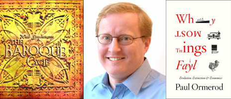
Jonathan Reynolds
The baroque cycle - Neal Stephenson
An epic of ‘intrigue, adventure and ideas’ which spans several novels, three volumes and two centuries, Stephenson describes his work as something akin to science fiction. But it focuses semi-fictionally upon a critical period of genius, discovery and change in Europe of the 17th and 18th centuries. At a time when Europe is again in crisis, Stephenson’s Baroque cycle reminds us of the role of invention, of enterprise and the ways in which often eccentric, talented, eclectic, people can find opportunities through business in challenging political and economic times. It reminds us of the transformational potential of innovation by individuals and organizations at such points. The books also focus on the sources and nature of the complex rivalry between Newton and Leibnitz, the origins of numismatics and their consequences for modern financial systems. Not a read for the fainthearted, Stephenson’s 3,000 page thesis is something of a long summer read and a helpful distraction from the headlines.
Why most things fail - Paul Ormerod
By contrast, Paul Ormerod’s slim volume weighs in at just 250 pages. Ormerod’s credentials as a professional economist combine with his ability to produce accessible and persuasive prose (a combination of skills not always found in abundance in economics). His book is a reminder of the incidence and persistence of failure: one of the ‘great unmentionables’. Ormerod presents his case in a meticulously argued and evidenced way. As others extol business success — often in firms which are then almost destined to fail — Ormerod points out and seeks to explain the pervasive nature of failure, drawing on parallels between biology and human organisation. (Meyer & Zucker’s discussion of Permanently failing organisations is now nearly 20 years old). These are therefore not especially new ideas, but their importance has tended to be neglected. And we are dominated instead by the urge to create and perpetuate the hyperbolic cultures of success which characterise much management practice, whilst failure in many (though not all) cultures is seen as terminal rather than educational.
-
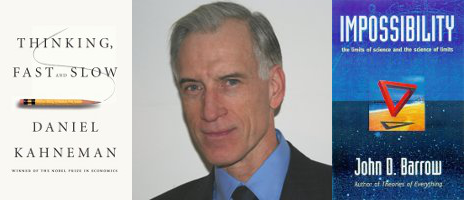
Sherman D. Roberts
Thinking, fast and slow - Daniel Kahneman
The first and perhaps the most important object of critical thinking is arguably one’s own behaviour and habits of choice. In his 2011 book, Kahneman presents an extraordinarily complete and balanced look at the biases that seem to come preprogrammed by natural selection into the so-called intuitive “System One” of our brains. He shows how the “default” heuristics of this “system” (actually a metaphor for behavioural regularities) often pre-empt or override our conscious thinking (a.k.a. “System Two”) thereby making critical and rational forms of thinking far less common and decisive than most tend to believe. At the same time, Kahneman relates innate biases to circumstances in which we actually do acquire extraordinary powers of choicemaking accuracy and real expertise. The chances that we have to develop our System Two powers depend upon the application of systematic practice with reliable feedback in environments that have identifiable regularities. The book, dedicated to his long-time collaborator, Amos Tversky, makes significant strides toward a unified understanding of human choicemaking.
Impossibility: The limits of science and the science of limits - John D. Barrow
Questioning assumptions of any kind is largely a matter of knowing what is and what is not possible. Professor Barrow’s book is massively impressive and extraordinarily helpful to those who wish to reflect upon and apply systematic thinking to important issues of theory and practice. Having spent some time in what I fondly call “The Land of ‘You Can Argue...” (a.k.a. the Harvard Kennedy School of Government) where you can, in fact argue ANYTHING, I find Barrow’s “Let’s Get Down to the Bedrock” approach much more promising and helpful.
-
Linda Scott
World of goods - Mary Douglas and Baron C Isherwood
This book begins with a stark statement about the failure of economics to engage with the question: why do people buy things? These highly respected authors proceed through a literature review that ends by taking economists to task for allowing tacit moral judgements to stand in for a careful study of the whole phenomenon of consumption. For me, Douglas and Isherwood’s focus on the way people use goods to accomplish a variety of social tasks, from mediating relationships to communicating status, was a “lights on” moment that has affected the way I approach all my research. I begin with the basic assumption that all acts of consumption are meaningful attempts to accomplish something. My job is not to judge such acts to be “rational” or “irrational,” but to understand the reasons behind each purchase. Those reasons are always there—sometimes funny, sometimes tragic, often inspiring, always human— if you only take the trouble to look.
The gift - Marcel Mauss
When I first read Marcel Mauss’ seminal work in economic anthropology, I was interested in how advertisements employ images and music in the service of selling goods. Advertising’s role in the economy is often demonized and adverts are often specifically criticized for “using culture to sell.” Mauss taught me that the longer human tradition is to tell stories about goods being exchanged, as well as to give them names, to sing songs about them, even to invent family lineage for them. Mauss emphasizes that it is impossible and even counterproductive to try to separate art, religion and kinship from economics: you must understand them all in a piece. In my book, Fresh lipstick, I also made extensive use of Mauss’ theory of the web of obligation in explaining the unfolding of the modern economy among women and particularly the system that emerged to distribute toiletries and cosmetics. Here, you must look at all aspects of the exchange, including things like barter, favors, introductions, sex, and so on, not just at the money changing hands if you are really going to understand what is going on. In recent years, the book has had further influence on me in other ways. Mauss documents convincingly that the basic nexus of economic behavior is sharing, not self-interest. He also emphasizes the importance of marriage and other ways in which humans are exchanged for goods, which has been central to my analysis of the women’s economy.
-
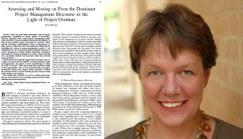
Janet Smart
Assessing and moving on from the dominant project management discourse in the light of project overruns - Terry Williams, IEEE Transactions on Engineering Management 52, 2005
Terry has many years of experience in project management, and in this paper he addresses the flaws in the dominant model of project management. Rather than criticising people for failing to apply the model correctly, he shows that actually the model is at fault. From this perspective, he explains many of the phenomena that would be familiar to those who work in project management. I use this paper as a starting point in my module on Systems Engineering in the MSc in Major Programme Management. It challenges people to take a new perspective on their work, and indeed on everything they have been taught. People with an engineering background are challenged on the assumptions that were implicit in their education, assumptions that may not have even known were there. Students who come from a different background gain an insight into the thinking and training of engineers and physicists.
-

Peter Tufano
The Kon-Tiki expedition
As a boy growing up in the age of space exploration, I was well aware of the power of science to shape the future. Reading the book, Kon-Tiki, over a Thanksgiving break when I was about 11 years old showed me that science could also help understand the past. Thor Heyerdahl was a Norwegian explorer who built an accurate replica of a small float which he and a small crew attempted to sail from Peru to Polynesia in an attempt to demonstrate the migratory patterns of pre-Columbian explorers. This was “science in the wild” and I found it as fascinating as the space missions of the day. This science sought to study history—-a new concept for me. I went on, ultimately, to a career of social science “in the wild” through research projects which are carried out in real time in the real world.
Small is beautiful: Economics as if people mattered- E F Schumacher
After four years of Neoclassical Economics at Harvard, my appetite for models and equations had waned a bit, and in 1979, I found myself working at a consulting firm in New York City. I spent most of my time reading books on architecture and the built environment, which was, and still is, an important avocation for me. However, one day I picked up Schumacher’s short book. While I didn’t agree with everything I read, I found it fascinating. His discussion of natural resources seemed sensible, and his concept of “enoughness” as well as the appropriate use of technology was a breath of fresh air. To put this in context, Milton Friedman’s Free to choose was the popular economics book of the time, and Schumacher’s book of essays laid out a very different route. Later on, I would go on to study “small finance” in the form of household finance, and to host a conference at Harvard between the business and divinity schools on “enoughness.”
-
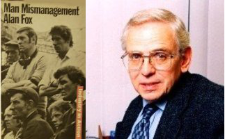
Roger Undy
Man mismanagement - Alan Fox
This book was published two years after I started work as a Research Associate at the Oxford Centre for Management Studies (OCMS), on the site now inherited by SBS Executive Education. At the time Alan Fox was a University Lecturer in Industrial Sociology and occasional contributor to the executive courses. He had, in common with me, entered university as a mature student after working in industry. Hence, he had had a “real job” before he started to work as an academic and began to write learned tomes about managers and the different means they employed to control their workforces. This book (following his research paper for the Royal Commission on Trade Unions and Employers` Associations in 1966) brought the concept of pluralism, previously used to challenge the primacy of the political doctrine of sovereignty, into the centre of debates over the nature of management, workers, and ‘trade unions` relationships. In particular, his three “frames of reference” or perspectives — pluralist, unitarist and radical — provided three different lenses through which students and practitioners could, if persuaded, more objectively view and analyse the industrial relations “battle field” of the 1970s when the recent surge in industrial disputes and strikes, reflecting the growth of union power, tended to be applauded or cursed according to the assembled students` political leanings. For this was a period when Oxford`s undergraduates and postgraduates, including those in management studies, could be counted on to hold strong and often conflicting political views on the rights and wrongs of strikes and the exercise of union power. In contrast, most executives could generally be counted on to have only one perspective on such conflict ie, the unitary perspective — i.e., management should rule. Indeed I can still recall the then head of IBM in Britain (and a member of OCMS` Council) telling me, after sitting in on one of my executive industrial relations sessions which, as usual, was firmly grounded in the pluralist perspective, that he “disagreed with everything I said”. In summary, from the 1970s, when it was used in the study of industrial relations and up to the modern period, the distinction between Pluralist and Unitarist perspectives still holds analytical value. At the start of the period, the group known as the “Oxford School of Industrial Relations” employed it to good effect in both analysing the industrial relations problems of the day and in advising the Government on possible solutions, while more recently, with the rise of Human Resource Management, it may also help explain why it is in the present economic and political context that HRM (with its unitary tendencies) has displaced the term industrial relations (with its pluralist pedigree) in many a business school`s prospectus.
-
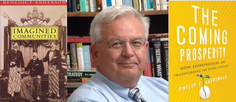
Marc Ventresca
Imagined communities: Reflections on the origin and spread of nationalism - Benedict Anderson
Ben Anderson’s Imagined communities is one of the pioneering modern studies of nationalism — how and why we have come to believe in the sacredness of modern nations. This short set of essays reads beautifully. The argument refocuses conventional wisdom about the sources of ‘nations’ to argue that ‘nationalism’ first appears in the colonies of Africa and Latin America, the outcome of psychic distance from the metropoles, and is materialized in indigenous, often creole literatures, newspapers, and popular culture like plays; and only then migrates back to Europe in the revolutions of the late 19th century and eventually the worldwide decolonialization movements of the 20th. The book fundamentally re-set the thinking of a generation of social scientists about how ideas interleave with social and material process, innovation, technology, and popular media, to channel action. Anderson provides a way to understand a broad array of ‘technologies’ that generate new forms of commitment and action. This work provides a framework for what I teach on the MBA/EMBA strategy and innovation core elective and also opens up a way to understand the impact of the new social media and technologies on commerce, identity, and action per the Gladwell/Twitter(Biz Stone) debates on mobilization.
The coming prosperity: How entrepreneurs are transforming the global economy - Philip E Auerswald
Phil Auerswald’s book, The coming prosperity, is a jolt of reasoned, empirically supported optimism about the scale of global prosperity occasioned by new forms of global linkages, technology and otherwise. His core thesis is a bracing critique of the unimaginative assessment of economy and community that dominate too much popular media and academic conversation: he argues for, and supports with data, a different vision, along with a field guide to being a system builder. Auerswald mobilizes his own work in economic history and innovation policy, a fresh reading of much academic research, and a decade of travel, conversation and observation around the world to forge his critical view of the current restricted imagination in research and much policy, where practice outpaces both. There is space here for the new institutional economics of Elinor Ostrom, not Oliver Williamson.
-
Sara Ward
Bad thoughts: A guide to clear thinking - Jamie Whyte
It seems to me that critical thinking is sometimes used as a euphemism for pedantry. This light read, possibly best kept for a hammock or a day on the beach, illustrates the point. In his preface, Jamie Whyte argues that all self-help books should start with a confession. He gets riled and writes letters to newspaper editors or rants at anyone who will listen to him. With due respect to that principle then – I am a pedant and actually quite proud of the fact. I settled on this book in the same way I do a number of my summer holiday reads – as a recommendation from a phenomenally well read friend (if he reads this - thanks!). Bad thoughts is appealing in its structure, and reminiscent of the work of another of my favourites – Malcolm Gladwell. Whyte presents a dozen different errors of reasoning or fallacies. He illustrates these with examples and invites us to look out for them. This book acts as a primer on logical thinking which fills the middle ground between sound bite and text book quite effectively. All pedants, or critical thinkers if you prefer, will relate to something here and are likely to dip into it more than once.
-
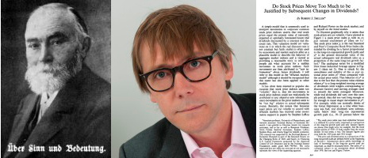
Mungo Wilson
Uber Sinn und Bedeutung - Gottlob Frege
My first encounter with rigorous logical argument. Also brilliantly written: not a surplus word.
Do stock prices move too much to be justified by subsequent changes in dividends? - Robert J. Shiller in AER 71, 1981
This paper demolished the notion that asset prices equal the present value of future cash flows, discounted at constant rates. It followed immediately that stock market returns should be predictable. It is the founding paper of my field in the modern era.
-
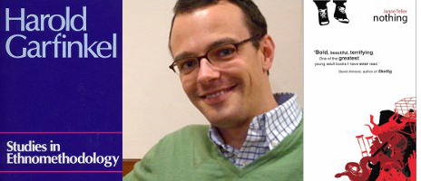
Malte Ziewitz
Studies in ethnomethodology - Harold Garfinkel
This is a book I have never read from the beginning to the end. And yet, it is one of the most challenging, fun and useful texts I have come across in recent years. Garfinkel’s Studies in ethnomethodology is not a textbook introduction to a methodology as the title might suggest. It is a collection of more or less independent articles that explore members’ methods, i.e. the ways in which order is being accomplished in mundane everyday interactions. In other words, this is not a book about “social order” in the grandiose vocabulary of “society”, “rules” or “behaviour” championed by professional social scientists. It is a book about “ordering” as a practical activity that is always already going on, and can therefore usefully be studied as such. Famous features of the book are the many practical exercises Garfinkel and his group devised to demonstrate observable-reportable phenomena of ordering in situ. In the “breaching experiments” for example, Garfinkel asked his students to behave like guests at their own family dinner. The ensuing turmoil allowed the class to think about the taken-for-granted assumptions and expectations that come with family membership and dinner etiquette. In the “counselling experiment”, participants were invited to ask a counsellor for advice on a personal problem under the condition that the counsellor could only answer with “yes” or “no”. While participants did not know the answers were randomly chosen, they found the advice useful and had no difficulty making sense of them – a phenomenon Garfinkel termed the “documentary method of interpretation”. Despite all the fun and insight, Garfinkel’s studies can be awkward and challenging to read. But that’s a feature, not a bug. True to its spirit, it does not simply preach, but exemplifies its very insights. For me, this is pedagogy at its best.
Nothing - Janne Teller
The funny thing about children’s books is that they usually work equally well for adults – and this one is no exception. This is the blurb:
“Nothing matters.”
So says Pierre Anthon when he decides that there is no meaning to life, leaves the classroom, climbs a plum tree, and stays there. His friends and classmates cannot get him to come down, not even by pelting him with rocks. So to prove to him that there is a meaning to life, they set out to build a heap of meaning in an abandoned sawmill. But it soon becomes obvious that each person cannot give up what is most meaningful, so they begin to decide for one another what the others must give up. The pile is started with a lifetime’s collection of Dungeons & dragons books, a fishing rod, a pair of green sandals and a pet hamster – but then, as each demand becomes more extreme, things start taking a very morbid twist, and the kids become ever more desperate to get Pierre Anthon down. And what if, after all these sacrifices, the pile is not meaningful enough?
“From the moment you are born, you start to die.”
“The Earth is 4.6 billion years old. You’ll live to be a maximum of one hundred. Life isn’t worth the bother!”
Good questions, and a great story. -
Thank you!
Chris Flegg - Business School Librarian
Despite heavy workloads, 37 members of the School have contributed to this compilation. On behalf of the entire SBS community I am deeply gratified by their enthusiasm for the concept, and both humbled and appreciative of their open and generous response to this idea. We have thoroughly enjoyed our role in facilitating the Critical Thinkers event.
Printed versions of this compilation are available from the Sainsbury Library.
And what would the Business School Librarian have nominated if asked?
That's easy: The spring tune by Tove Jansson, for its exquisitve capture - in a deceptively simple, beautiful, insightful, and profound way - all you could ever wish to know about how to be a contented human being.